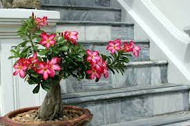
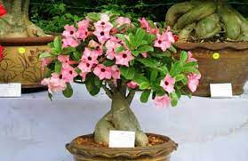
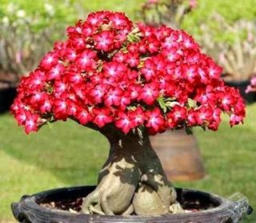

Rosas do Deserto: Beleza Sob o Sol Escaldante
Descubra a incrível diversidade de cores, formas e padrões das rosas do deserto. Essas plantas resistentes prosperam em condições áridas e florescem com uma beleza deslumbrante.

Rosas do Deserto: Flores Exóticas da Natureza
As rosas do deserto são verdadeiras maravilhas da natureza, com suas flores exóticas e únicas. Explore nossa coleção de variedades raras e deslumbre-se com suas formas e cores extraordinárias.

Rosas do Deserto: Elegância e Durabilidade
Se você busca flores que combinem elegância com resistência, não procure mais. Nossas rosas do deserto são a escolha perfeita, trazendo beleza duradoura e um toque de exotismo para qualquer ambiente.